Linear Modeling (with matrices and likelihoods)
EFB 796: Practical Seminar in Quantitative Ecology
Nicki Barbour & Elie Gurarie
2025-01-29
1 The Linear Model
We all learned what a linear model was in high school at some point (even if we didn’t use the word model then), likely via the iconic formula, \(Y = mX + b\), with \(Y\) and \(X\) the (continuous, numeric) dependent and independent variables, respectively, \(m\) representing the slope of the linear relationship between the two, and \(b\) the intercept.
The “classic” linear regression1 model with a single predictor in statistics is formulated typically as:
\[Y_i = \alpha + \beta X_i + \epsilon_i\]
with \(Y\) as the response variable, \(X\) as the predictor, \(i\) indexing observations (\(1,2, ... n\)) intercept \(\alpha\), slope \(\beta\) and \(\epsilon_i\) as a “residual” variation. In the broader field of linear modeling, we’ll use \(\beta\) as a vector for all the coefficients, so:
\[Y_i = \beta_0 + \beta_1 X_{1i} + \beta_2 X_{2i} + ... + \beta_k X_{ki} + \epsilon_i\]
In fact - the most sophisticated (and useful) way to write a linear model is in terms of a matrix of predictors (i.e. a \(n \times x\) tabulation of each predictor for each observation), and a vector of coefficients \(\beta\):
\[{\bf Y} = \bf{X}\beta + \epsilon\]
This is not just for compact notation but, as we’ll see later, extremely useful for fitting models, and “generalizing” the linear model.
One more useful but of notation is the linear predictor:
\[\widehat{Y} = {\bf X} \beta\]
So - in the simplest case: \[\widehat{Y} = \beta_0 + \beta X\]
With not quite perfect notation, these are illustated in the figure below:

Importantly, our classic linear model contains important assumptions about the distribution of the residuals2, i.e.~the difference between each actual data point and the regression line. Namely, that they are (1) normally distributed with (2) mean 0 and constant variance, and (3) independent. These assummptions are often summarized is i.i.d. (independent and identically distributed). It is important to assess the validity of these assumptions when fitting normal models.
\[\epsilon_i \sim {\cal N}(0, \sigma^2)\]
2 Linear model in R
In R, we can run a classic linear regression by using the
lm function, from the stats package (see
?lm). But what is actually happening to get those beautiful
parameter estimates?
A quick simulation show us how this works:
alpha <- -1; beta <- 0.5; sigma <- 1
X <- 1:20
Y <- alpha + beta * X + rnorm(length(X), 0, sd = sigma)
plot(X,Y)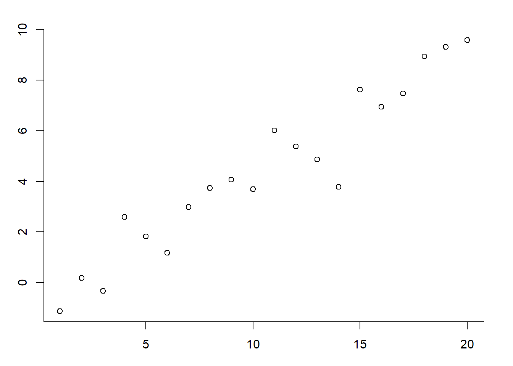
The model fit is:
lm(Y~X)##
## Call:
## lm(formula = Y ~ X)
##
## Coefficients:
## (Intercept) X
## -1.0361 0.5216This provides estimates for the intercept and slope. You can add
those lines easily with the abline() command:
alpha <- -1; beta <- 0.5; sigma <- 1
X <- 1:20
Y <- alpha + beta * X + rnorm(length(X), 0, sd = sigma)
plot(X,Y)
abline(lm(Y~X), col = 2, lwd = 2)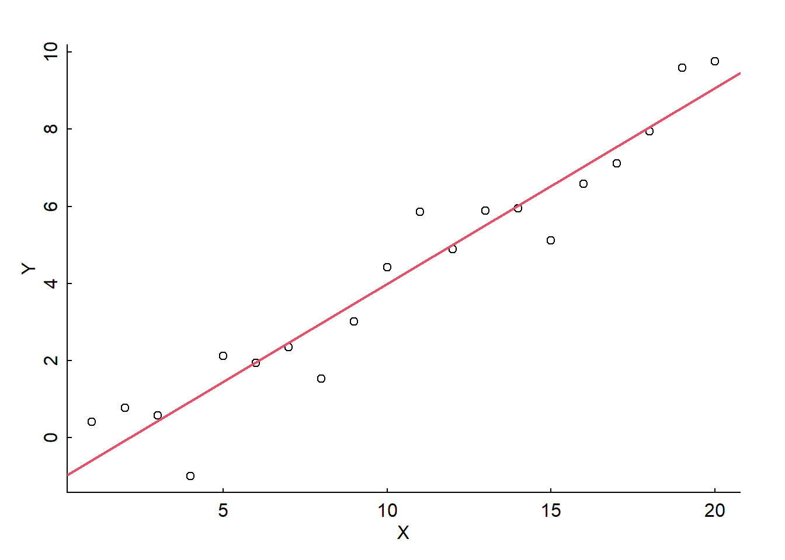
How precise are those estimates? This is best obtained with the
summary() command:
summary(lm(Y~X))##
## Call:
## lm(formula = Y ~ X)
##
## Residuals:
## Min 1Q Median 3Q Max
## -1.93414 -0.43986 -0.04475 0.67526 1.36140
##
## Coefficients:
## Estimate Std. Error t value Pr(>|t|)
## (Intercept) -1.08521 0.41533 -2.613 0.0176 *
## X 0.50750 0.03467 14.638 1.94e-11 ***
## ---
## Signif. codes: 0 '***' 0.001 '**' 0.01 '*' 0.05 '.' 0.1 ' ' 1
##
## Residual standard error: 0.8941 on 18 degrees of freedom
## Multiple R-squared: 0.9225, Adjusted R-squared: 0.9182
## F-statistic: 214.3 on 1 and 18 DF, p-value: 1.94e-11So the estimates are -1.08, s.e. 0.41, and 0.51m s.e. 0.35 for intercept and slope respectively.
The lm output object contains multitudes, and is almost
always worth saving as an extra object:
mylm <- lm(Y~X)
str(mylm)## List of 12
## $ coefficients : Named num [1:2] -1.085 0.507
## ..- attr(*, "names")= chr [1:2] "(Intercept)" "X"
## $ residuals : Named num [1:20] 0.997 0.852 0.137 -1.934 0.668 ...
## ..- attr(*, "names")= chr [1:20] "1" "2" "3" "4" ...
## $ effects : Named num [1:20] -18.978 13.087 -0.164 -2.214 0.408 ...
## ..- attr(*, "names")= chr [1:20] "(Intercept)" "X" "" "" ...
## $ rank : int 2
## $ fitted.values: Named num [1:20] -0.5777 -0.0702 0.4373 0.9448 1.4523 ...
## ..- attr(*, "names")= chr [1:20] "1" "2" "3" "4" ...
## $ assign : int [1:2] 0 1
## $ qr :List of 5
## ..$ qr : num [1:20, 1:2] -4.472 0.224 0.224 0.224 0.224 ...
## .. ..- attr(*, "dimnames")=List of 2
## .. .. ..$ : chr [1:20] "1" "2" "3" "4" ...
## .. .. ..$ : chr [1:2] "(Intercept)" "X"
## .. ..- attr(*, "assign")= int [1:2] 0 1
## ..$ qraux: num [1:2] 1.22 1.26
## ..$ pivot: int [1:2] 1 2
## ..$ tol : num 1e-07
## ..$ rank : int 2
## ..- attr(*, "class")= chr "qr"
## $ df.residual : int 18
## $ xlevels : Named list()
## $ call : language lm(formula = Y ~ X)
## $ terms :Classes 'terms', 'formula' language Y ~ X
## .. ..- attr(*, "variables")= language list(Y, X)
## .. ..- attr(*, "factors")= int [1:2, 1] 0 1
## .. .. ..- attr(*, "dimnames")=List of 2
## .. .. .. ..$ : chr [1:2] "Y" "X"
## .. .. .. ..$ : chr "X"
## .. ..- attr(*, "term.labels")= chr "X"
## .. ..- attr(*, "order")= int 1
## .. ..- attr(*, "intercept")= int 1
## .. ..- attr(*, "response")= int 1
## .. ..- attr(*, ".Environment")=<environment: R_GlobalEnv>
## .. ..- attr(*, "predvars")= language list(Y, X)
## .. ..- attr(*, "dataClasses")= Named chr [1:2] "numeric" "numeric"
## .. .. ..- attr(*, "names")= chr [1:2] "Y" "X"
## $ model :'data.frame': 20 obs. of 2 variables:
## ..$ Y: num [1:20] 0.419 0.782 0.575 -0.989 2.12 ...
## ..$ X: int [1:20] 1 2 3 4 5 6 7 8 9 10 ...
## ..- attr(*, "terms")=Classes 'terms', 'formula' language Y ~ X
## .. .. ..- attr(*, "variables")= language list(Y, X)
## .. .. ..- attr(*, "factors")= int [1:2, 1] 0 1
## .. .. .. ..- attr(*, "dimnames")=List of 2
## .. .. .. .. ..$ : chr [1:2] "Y" "X"
## .. .. .. .. ..$ : chr "X"
## .. .. ..- attr(*, "term.labels")= chr "X"
## .. .. ..- attr(*, "order")= int 1
## .. .. ..- attr(*, "intercept")= int 1
## .. .. ..- attr(*, "response")= int 1
## .. .. ..- attr(*, ".Environment")=<environment: R_GlobalEnv>
## .. .. ..- attr(*, "predvars")= language list(Y, X)
## .. .. ..- attr(*, "dataClasses")= Named chr [1:2] "numeric" "numeric"
## .. .. .. ..- attr(*, "names")= chr [1:2] "Y" "X"
## - attr(*, "class")= chr "lm"An important piece is that residual portion:
mylm$residuals## 1 2 3 4 5 6
## 0.99668452 0.85234496 0.13727515 -1.93414001 0.66753895 -0.01591403
## 7 8 9 10 11 12
## -0.12307928 -1.44553465 -0.46043081 0.42816232 1.36140183 -0.10756394
## 13 14 15 16 17 18
## 0.37539691 -0.07357823 -1.40433123 -0.44976472 -0.43655860 -0.10908053
## 19 20
## 1.04275975 0.69841164Which we can assess visually via some residual diagnostics.
To assess the normality of the residuals, we use Quantile-Quantile (or QQ) plots, which plots the value of your residuals against the quantile of each point from a normal distribution (“theoretical quantiles”). If their relationship is linear, the assumption is considered met. Here are the manual calculations of a qq-plot:
residuals_sorted <- sort(mylm$residuals)
# Compute normal quantiles
n <- length(residuals_sorted)
normal_quantiles <- qnorm((1:n - 0.5) / n)
plot(normal_quantiles, residuals_sorted)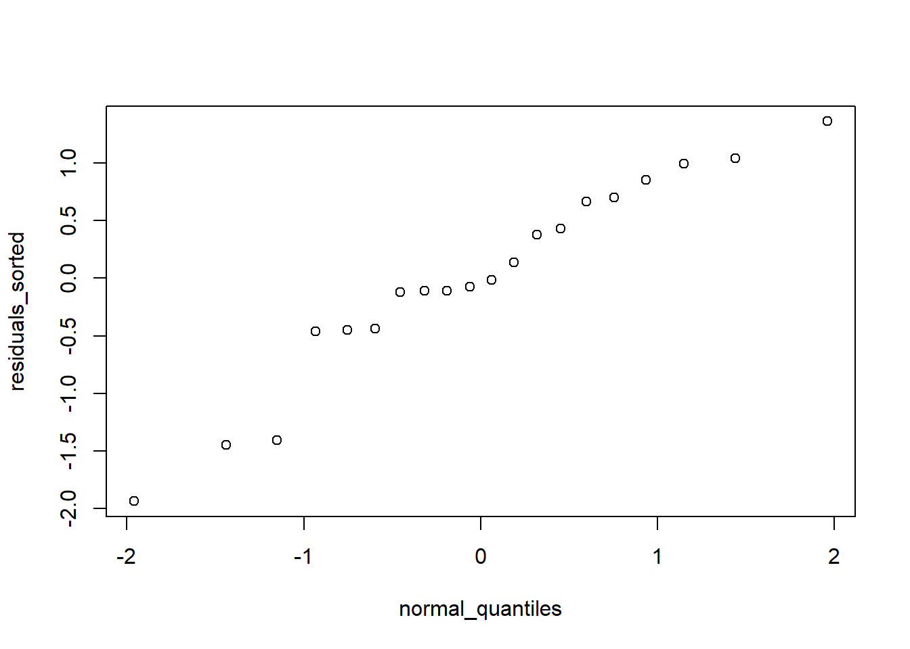
Here is the QQ-plot as described above:
qqnorm(mylm$residuals)
qqline(mylm$residuals)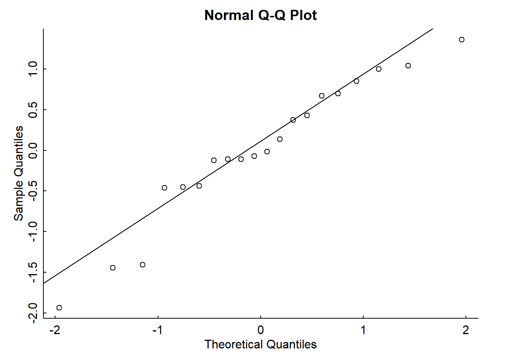
Looks pretty normal.
TO assess the homogeneity of variance we plot the residuals against the predicted (fitted) values can be an easy way to check this. Violating this assumption can affect the standard errors on your residuals and your model parameter estimates. Here is a residuals vs. fitted plot:
plot(mylm$fitted.values, mylm$residuals)
abline(h = 0)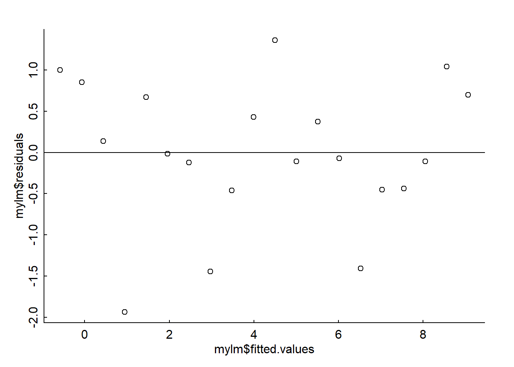
Looks like variance is constant and unstructured.
Other linear regression assumptions include no crazy influential outliers (can be checked with a Cook’s Distance plot) and that your residuals are independent of each other (no autocorrelation present - can be checked with a Durbin Watson test).
All of these residual diagnostic plots are performed with one line of code:
plot(mylm)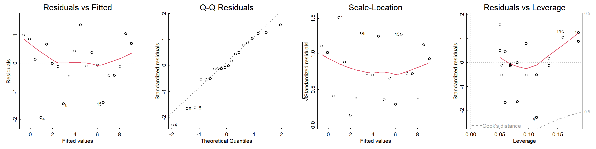
3 Ordinary Least Squares
The lm function uses Ordinary Least Squares
(OLS) to estimate parameter values. This is a straightforward method
with a single goal: to minimize the square of the sum of the residuals.
In other words, to find the values of \(\beta\) for which:
\[S(\beta) = \sum_{i=1}^n (Y - {\bf X}\beta)^2\]
is minimized. This is actually pretty straightforward to do mathematically in the univariate case. Write this sum as a function of \(\beta_0\) and \(\beta_1\):
\[ Y_i = \beta_0 + \beta_1 X_i + \epsilon_i\]
The sum of squaresquared residuals is:
\[S(\beta_0, \beta_1) = \sum_{i=1}^{n} (Y_i - \beta_0 - \beta_1 X_i)^2. \]
To find the minimum, you take the derivative and set to 0. There are two parameters, we’ll focus on \(\beta_1\) first:
To minimize \(S(\beta_0, \beta_1)\), we take partial derivatives with respect to \(\beta_0\) and \(\beta_1\) and set them to zero.
\[\frac{\partial S}{\partial \beta_1} = -2 \sum_{i=1}^{n} X_i (Y_i - \beta_0 - \beta_1 X_i).\]
Setting this to zero:
\[\sum_{i=1}^{n} X_i (Y_i - \beta_0 - \beta_1 X_i) = 0.\] And solving for \(\beta_1\) (after some manipulations) gives:
\[\widehat{\beta}_1 = \frac{\sum_{i=1}^{n} (X_i - \bar{X}) (Y_i - \bar{Y})}{\sum_{i=1}^{n} (X_i - \bar{X})^2}\]
This formula is worth meditating on and thinking about geometrically. You multiply the pair-wise deviations of \(X\) and \(Y\) from the mean, and then re-scale by the deviations in the \(X\).
Let’s convince ourselves that this formula works for the simulated data above:
sum( (X-mean(X)) * (Y - mean(Y))) / sum((X-mean(X))^2)## [1] 0.5074985Sure enough, we get something close to 0.5! And exactly the estimate
from the lm() function:
lm(Y~X)##
## Call:
## lm(formula = Y ~ X)
##
## Coefficients:
## (Intercept) X
## -1.0852 0.50753.1 OLS in matrix notation
The matrix representation of the linear model is:
\[ Y = X\beta + \epsilon\] where \(Y\) is a \(n\) x 1 vector of observations, \(\beta\) is a 1 x \(k\) vector of our regression coefficients (e.g., for simple linear regression, \(\beta_0\) and \(\beta\) - the things we want to estimate), \(bf X\) is a \(n\) x \(k\) matrix of covariates, also known as the “design matrix”, and \(\epsilon\) is a vector of random errors.
In the univariate case \(\bf X\) actually has two columns, one for the intercept (consisting entirely of 1) and one for the covariate of interest.!
For example, let’s say we have 3 observations, so that \(Y = (1, 2, 3)\):
Y <- c(1, 2, 3)If we had an “intercept only” model (no covariate), our design matrix \(X\) would just have a vector of 3 1’s for the intercept:
X <- matrix(1, nrow = 3)
X## [,1]
## [1,] 1
## [2,] 1
## [3,] 1If we added a covariate, our design matrix \(X\) would then contain two columns, one with our intercept values (1) and one with our covariate values.
Let’s say we had covariate values \((0, 1, 2)\).
covar <- c(-1, 0, 1)We can append our covariate values to our design matrix \(X\) using the cbind
function:
X <- cbind(X, covar)
X## covar
## [1,] 1 -1
## [2,] 1 0
## [3,] 1 1This is a “hand-made” design matrix!
These (very simple) data look like this:
plot(covar, Y)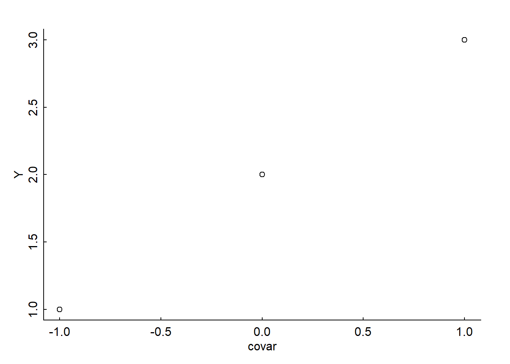
Recalling that the goal of OLS it to minimize the sum of squared residuals (RSS) which we notated as \(S(\beta)\) above:
\[ S(\beta) = (Y-{\bf X}\beta)^T(Y-{\bf X}\beta)\] The general solution is:
\[ \widehat{\beta} = ({\bf X}^T{\bf X})^{-1} {\bf X}^TY\]
Here, the \(X^TX\) represents the “transpose of \(X\) multiplied by the \(X\)”. This is essentially the matrix equivalent of the denominator in the univariate solution given above: \(\sum(X - \bar{X})^2\). But we’ll break it down:
3.1.1 What is a “transpose”?
If we have a matrix \(X\) with \(i\) rows and \(j\) columns, the transpose simply flips rows and columns topsy-turvy, e.g., for matrix \(X_{ij}\), the transpose is \(X^T = X_{ji}\).
The R function to take the transpose of a matrix is
t:
t(X)## [,1] [,2] [,3]
## 1 1 1
## covar -1 0 1Now we take the product of our transposed matrix \(X\) with matrix \(X\), such that \(X^TX\).
Matrix multiplication can be performed when the number of columns in the first matrix is equal to the number of rows in the second matrix, to produce a matrix product with the same number of rows as the first matrix and the same number of columns as the second matrix.
For example, if we had matrix \(A_{ij}\) and matrix \(B_{jn}\), the product matrix \(AB\) would be \(AB_{in}\). Each entry in the new matrix \(AB\) is found by taking the dot product of the \(i\)-th row of matrix \(A\) and the \(n\)-th column of matrix \(B\).
So, e.g., for matrices \(A\) (2 x 2) and \(B\) (2 x 3):

In R, matrix multiplication for two matrices is given by
%*%:
t(X) %*% X## covar
## 3 0
## covar 0 2For the example above:
A <- rbind(c(1,5), c(4,3))
B <- rbind(c(3,1,2), c(1,4,5))
A %*% B## [,1] [,2] [,3]
## [1,] 8 21 27
## [2,] 15 16 233.1.2 What is an “inverse”?
The next step in our solution is to take the inverse of \(X^TX\), such that \(({\bf X}^T{\bf X})^{-1}\). Note - you can ONLY take the inverse of a square matrix.
The inverse of a matrix is defined by a very special property, that the product of a matrix by its inverse is equivalent to its identity matrix \(I\):
\[{\bf X}^{-1}{\bf X} = I\]
(Note also that usually multiplying two matrices is not commutative, e.g. \(AB \neq BA\) - however, when you multiply a matrix by its inverse, it is commutative, e.g., \(AA^{-1}=A^{-1}A\) - this means for our equation, that \(X^{-1}X = XX^{-1} = I\) ).
What is an identity matrix \(I\)? It’s what you would multiply a matrix by to get itself, such that \(X*?=X\). If you work it out, the \(?\) ends up being a matrix of almost all 0’s, with 1’s in the diagonal. So, for an example matrix \(A\) (2 x 2):

Getting the inverse of a matrix is actually not easy - it requires some time-intensive algebra, since you have to solve the equation \(X^{-1}X = I\) for the unknown component, the inverse matrix, \(X^{-1}\). In complicated, multi-dimensional regression models, it is this step which causes the computer the most grief.
The R function for inverting a matrix is solve():
A <- matrix(1:4, ncol = 2)
solve(A)## [,1] [,2]
## [1,] -2 1.5
## [2,] 1 -0.5A %*% solve(A)## [,1] [,2]
## [1,] 1 0
## [2,] 0 1For our mini-dataset:
solve(t(X) %*% X)## covar
## 0.3333333 0.0
## covar 0.0000000 0.53.1.3 Putting everything together
The next step in our solution is to get the “hat matrix” (converting \(Y\) to \(\widehat Y\)), which is this inverse product multiplied by the transpose of \({\bf X}\) (\({\bf X}^T\)):
solve(t(X) %*% X) %*% t(X)## [,1] [,2] [,3]
## 0.3333333 0.3333333 0.3333333
## covar -0.5000000 0.0000000 0.5000000Finally we multiply by \(Y\) to get \(\widehat{\beta}\):
beta_hat <- solve(t(X) %*% X) %*% t(X) %*% Y
beta_hat## [,1]
## 2
## covar 1So, our intercept estimate, \(\widehat{\beta_0}\), is 2 and our slope estimate, \(\widehat{\beta}\), is also 1.
To get our predicted values of Y (\(\widehat Y\)), we multiply our \(\widehat \beta\) by our design matrix, \(X\):
Y_hat <- X %*% beta_hat
Y_hat## [,1]
## [1,] 1
## [2,] 2
## [3,] 3We can also estimate the residual variance, \(\widehat {\sigma^2}\), as:
\[\widehat {\sigma^2}= \frac{1}{n-k}(Y-\widehat Y)^T(Y-\widehat Y) \] Where \(n\) is our number of observations and \(k\) is our number of parameters.
sigma_hat <- t(Y-Y_hat) %*% (Y-Y_hat)/(nrow(X)-ncol(X))
sigma_hat## [,1]
## [1,] 0We can plot our observations with our predicted model as:
plot(covar, Y)
abline(a = beta_hat[1,], b = beta_hat[2,], col = "red")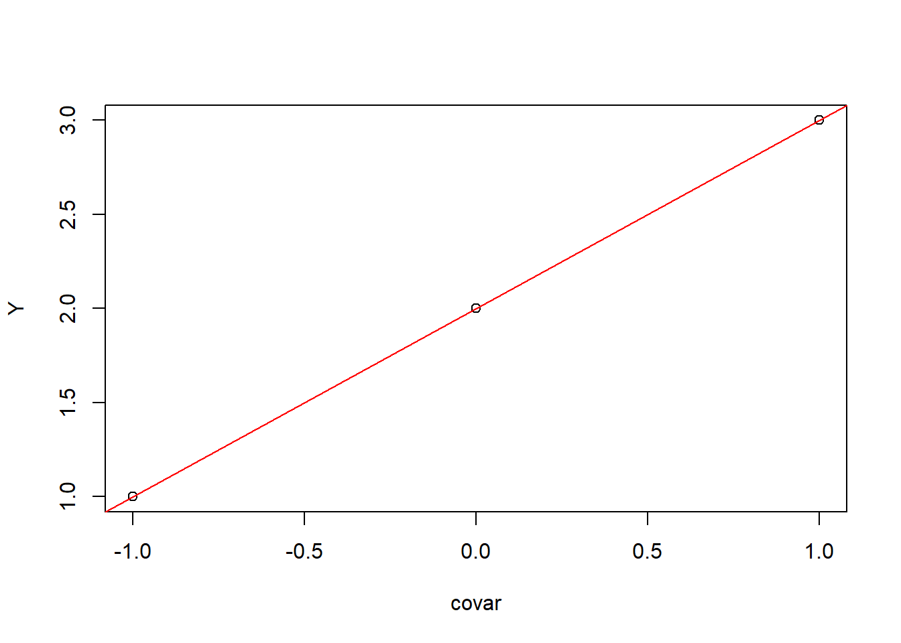
(Note: see link and link for more of Elie’s lectures on this)
Let’s crank through this with out original (simulated) data set:
par(mar = c(3,3,2,2), bty = "l"); set.seed(1)
alpha <- -1; beta <- 0.5; sigma <- 1
X <- 1:20
Y <- alpha + beta * X + rnorm(length(X), 0, sd = sigma)X.M <- cbind(rep(1, length(X)), X)
solve(t(X.M) %*% X.M) %*% t(X.M) %*% Y## [,1]
## -1.0360928
## X 0.5215825Voilá, like magic:
lm(Y~X)##
## Call:
## lm(formula = Y ~ X)
##
## Coefficients:
## (Intercept) X
## -1.0361 0.52164 Maximum Likelihood Estimates
So, what’s the difference between OLS and MLE (maximum likelihood estimation) for linear regression?
Both are methods to estimate \(\widehat \beta\) but OLS minimizes the sum of squared residuals (\(RSS\)) and MLE finds the parameters that maximizes the likelihood of the Gaussian model.
Spoiler alert: For the very specific case of a linear model with Gaussian residuals, the OLS estimates happen to be equal to the MLE estimates. But OLS breaks down for more complicated models, so ML is more generally useful.
Remember also from our Likelihoods lecture that using likelihoods with MLE “turns probabilities on their heads”. So with OLS, we fit a probability model to determine the probability of getting our data \(X\) given a particular model with particular parameters (e.g., \(\mu\) and \(\sigma\) for an intercept-only linear regression):
\[Pr(X|\mu,\sigma)\] …Whereas with a likelihood model, we determine the likelihood of a particular model with particular parameters (e.g., \(\mu\), \(\sigma\)), given our data \(X\):
\[\cal L(\mu,\sigma|X)\]
Both OLS and the MLE make the same assumptions, except OLS is focussed on the residuals (\(\epsilon_i \sim {\cal N}(0,\sigma^2)\)), whereas MLE is best thought of as modeling the entire probability function (\(Y \sim {\cal N}({\bf X}\beta, \sigma^2)\)). Again - they’ll be the same in this case, as the following real-data example should demonstrate.
4.1 Example: Mammal Allometry
We are going to use an example dataset from the MASS
package, called mammals, which contains brain and body size
weights for a variety of terrestrial mammals (\(n\) = 62 species).
require(MASS)## Loading required package: MASSdata(mammals)A call to help(mammals) shows the description of this
dataset, which contains average brain and body weights (in kg and g,
respectively) for different species.
Fascinatingly, research has shown (see Burger et al 2019) that there is a consistent allometric relationship between mammal brain and body sizes, with brain sizes consistently scaling to the 3/4th power of body size (e.g., \(Brain Size = -1.26(Body)^{0.75}\)).
 Let’s investigate the relationship
between brain and body size ourselves, using this
Let’s investigate the relationship
between brain and body size ourselves, using this mammals
dataset and the hypothesis that there is a strong linear (log-log)
relationship present.
Before digging into our analysis, let’s visualize and process our data a bit.
str(mammals)## 'data.frame': 62 obs. of 2 variables:
## $ body : num 3.38 0.48 1.35 465 36.33 ...
## $ brain: num 44.5 15.5 8.1 423 119.5 ...The names of the species are stored in the row.names of
the dataframe:
row.names(mammals)## [1] "Arctic fox" "Owl monkey"
## [3] "Mountain beaver" "Cow"
## [5] "Grey wolf" "Goat"
## [7] "Roe deer" "Guinea pig"
## [9] "Verbet" "Chinchilla"
## [11] "Ground squirrel" "Arctic ground squirrel"
## [13] "African giant pouched rat" "Lesser short-tailed shrew"
## [15] "Star-nosed mole" "Nine-banded armadillo"
## [17] "Tree hyrax" "N.A. opossum"
## [19] "Asian elephant" "Big brown bat"
## [21] "Donkey" "Horse"
## [23] "European hedgehog" "Patas monkey"
## [25] "Cat" "Galago"
## [27] "Genet" "Giraffe"
## [29] "Gorilla" "Grey seal"
## [31] "Rock hyrax-a" "Human"
## [33] "African elephant" "Water opossum"
## [35] "Rhesus monkey" "Kangaroo"
## [37] "Yellow-bellied marmot" "Golden hamster"
## [39] "Mouse" "Little brown bat"
## [41] "Slow loris" "Okapi"
## [43] "Rabbit" "Sheep"
## [45] "Jaguar" "Chimpanzee"
## [47] "Baboon" "Desert hedgehog"
## [49] "Giant armadillo" "Rock hyrax-b"
## [51] "Raccoon" "Rat"
## [53] "E. American mole" "Mole rat"
## [55] "Musk shrew" "Pig"
## [57] "Echidna" "Brazilian tapir"
## [59] "Tenrec" "Phalanger"
## [61] "Tree shrew" "Red fox"First we need to convert our body size column to grams (currently, in kg) to match our brain weight column:
mammals$body <- mammals$body*1000
head(mammals)## body brain
## Arctic fox 3385 44.5
## Owl monkey 480 15.5
## Mountain beaver 1350 8.1
## Cow 465000 423.0
## Grey wolf 36330 119.5
## Goat 27660 115.0Now let’s make a quick plot of the brain vs body sizes:
with(mammals, plot(brain ~ body))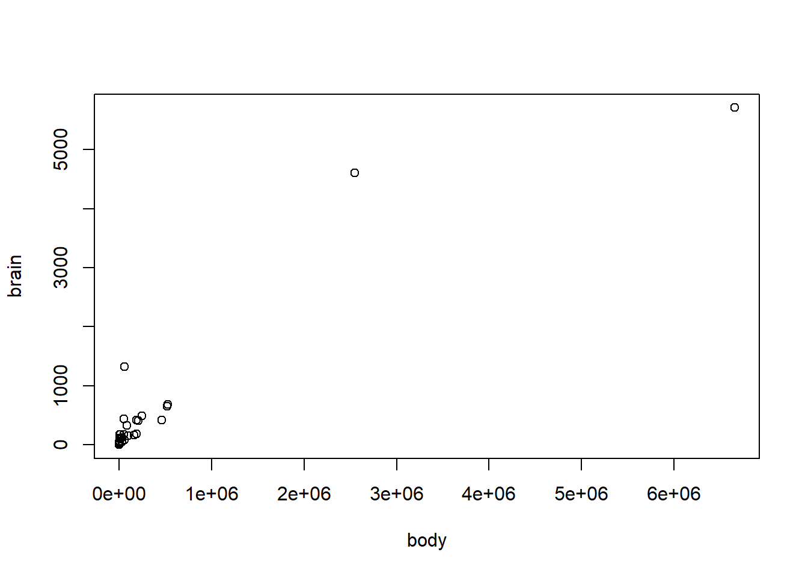
It’s not very pretty! Currently, both our brain and body size variables are skewed (lots of smaller weights, very few large weights), so a log-log transformation is appropriate.
hist(mammals$body)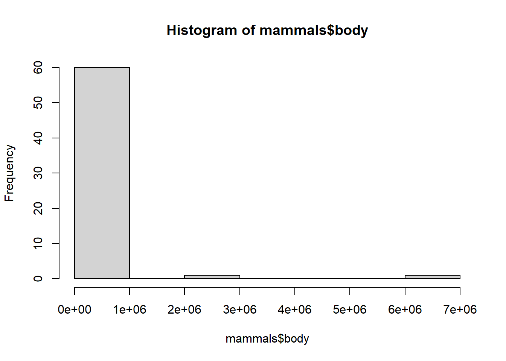
mammals$log_brain <- log(mammals$brain)
mammals$log_body <- log(mammals$body)Log-transformation makes the data much more reasonable to compare.
hist(mammals$log_body)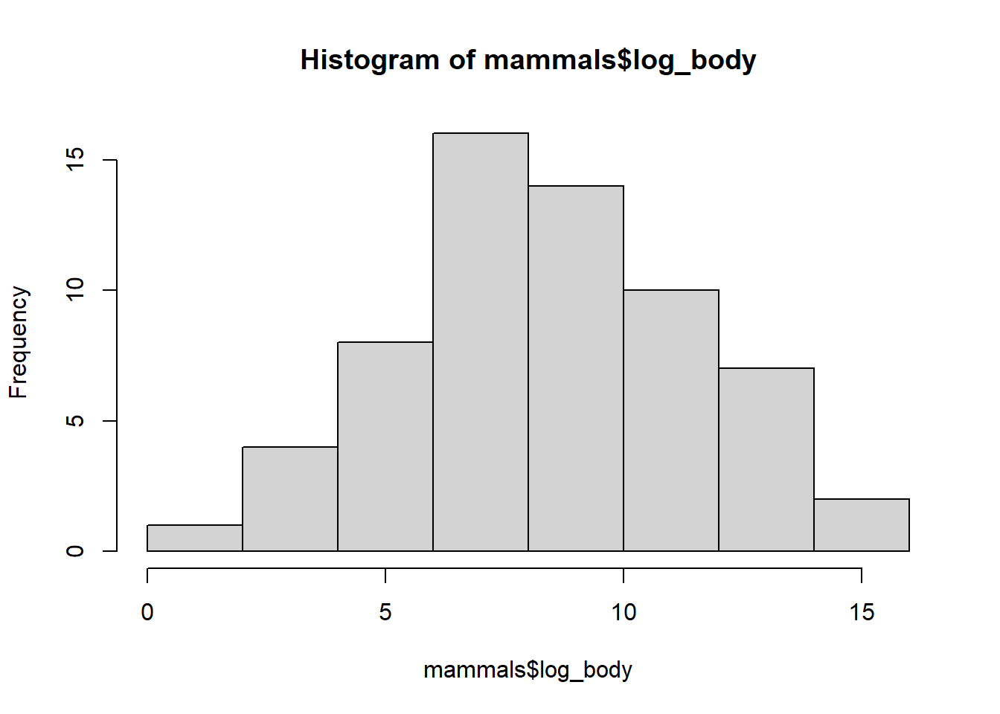
We can make a plot of our log-log relationship (including species names to see the range)- definitely looking pretty linear!
with(mammals,{
plot(log_brain ~ log_body)
text(log_body, log_brain, row.names(mammals), cex = 0.5, pos = 4, xpd = NA)
})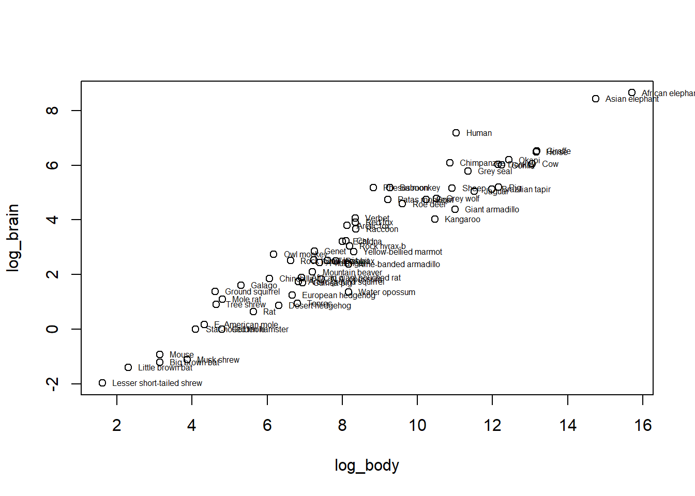
Our general model, now that we have log-transformed both our \(X\) and \(Y\) variables, is:
\[\log(Y) = \beta_0 + \beta_1 \log(X)\]
Notably, we can back-transform our variables by taking the exponent
(exp):
\[Y = \exp(\beta_0 + \beta_1 \log(X))\] \[Y = e^{\beta_0} e^{\beta_1 \log(X)}\]
\[Y = e^{\beta_0} \, \exp \left(\log(X^\beta_1)\right)\]
Which eventually gets us to:
\[Y = \alpha \, X^{\beta_1}\] Does this formula look familiar? It’s the allometric scaling relationship for these two variables \(Y\) and \(X\), where \(\alpha\) is \(e^{\beta_0}\) and \(\beta_1\) is the scaling coefficient.
Let’s see if we can get the same scaling coefficient (0.75) as Burger et al!
We will try a couple models, first an intercept-only (null) model:
\[M0: Y_i = \beta_0 + \epsilon_i\] And second, a simple linear regression model:
\[M1: Y_i = \beta_0 + \beta_1 X_i + \epsilon_i\]
where \(\epsilon\) represents errors that are i.i.d. Gaussian. Independent and identically distributed
For our mammals data, our variables are \(Y = Brain Size_{log}\) and \(X = Body Size_{log}\).
4.2 The null model
4.2.1 MLE
To use MLE, we first define our likelihood function, including the
parameters for our chosen probability distribution (here, the normal
distribution, so mu and sigma) and our
observations \(Y\). So, we can write
out our Likelihood function as:
\[\cal L(\mu,\sigma|\bf Y)\]
We will define a function to determine the (log)-probability of
observing specific mu and sigma values, given
our \(Y\) data (brain size). Refreshing
your memory back to the “Likelihood_slides” lecture html, we can use the
dnorm R function to generate the likelihood of a specific
mu and sigma, given our data \(Y\) (there is also an option for
log = TRUE to get the log-likelihood).
Remember also that to get the Joint Likelihood, or likelihood for many observations, we have to take the product of the likelihoods calculated for each observation. Remember also also that when we have log-likelihoods, you actually take the sum of the log-likelihoods (due to that fun product rule for logarithms, e.g., \(log(a*b) = log(a) + log(b)\)).
Of note, to “maximize the (log)-Likelihood” in R, we use the
optim function, and confusingly, it technically optimizes
by taking the minimum of the negative log-likelihood.
So, anytime we want to use optim, we have to make sure our
log-likelihood is negative.
neglogLik_Model0 <- function(par = c(mu, sigma), # all the parameters must be in 1 vector
Y){
logProb <- dnorm(Y,
mean = par['mu'],
sd = par['sigma'],
log = TRUE)
# minimizing the NEGATIVE log-likelihood
-sum(logProb)
}Remember that since we got the negative log-likelihood with our function, we want to minimize this value.
Can you minimize this value manually, with different values for
mu and sigma?
neglogLik_Model0(par = c(mu= 2, sigma = 2),
Y = mammals$log_brain)## [1] 155.6635To formally initialize optim, you need to provide initial values for
mu and sigm, preferably your “best guess” for
what these values should be. This just gives the function somewhere to
start.
fit_nullmodel <- optim(par = c(mu = 2, sigma = 2), neglogLik_Model0,
Y = mammals$log_brain)
fit_nullmodel## $par
## mu sigma
## 3.139816 2.426684
##
## $value
## [1] 142.9392
##
## $counts
## function gradient
## 59 NA
##
## $convergence
## [1] 0
##
## $message
## NULLThe output of our fitted object gives us the estimates (within
par) for mu and sigma and our
(negative) log-likelihood value (within value).
For a null model, where we just have mu and
sigma parameters, we can also use Methods of Moments
Estimators (MME) to estimate these parameters. We can use these
values (sample mean and variance, e.g., first and second moments
respectively) to define the theoretical mu and
sigma parameters, if we have a large enough sample
size.
mean(mammals$log_brain)## [1] 3.140198sd(mammals$log_brain)## [1] 2.446512Looks like our MME values are pretty spot on to our
optim values for mu and
sigma!
We can also get standard errors for each of our parameter estimates
by specifying hessian = TRUE in optim.
fit_nullmodel <- optim(par = c(mu = 2, sigma = 2), neglogLik_Model0,
Y = mammals$log_brain, hessian = TRUE)
fit_nullmodel## $par
## mu sigma
## 3.139816 2.426684
##
## $value
## [1] 142.9392
##
## $counts
## function gradient
## 59 NA
##
## $convergence
## [1] 0
##
## $message
## NULL
##
## $hessian
## mu sigma
## mu 10.528468884 0.003314227
## sigma 0.003314227 21.057433827Remember that the Hessian is a matrix and to get the standard errors,
we need to take the inverse of the Hessian matrix (using
solve) and then the square root of the diagonal:
se <- diag(sqrt(solve(fit_nullmodel$hessian)))
se## mu sigma
## 0.3081892 0.2179201We can then calculate our 95 percent confidence intervals:
data.frame(estimate = fit_nullmodel$par,
se = se,
CI.low = fit_nullmodel$par - 1.95*se,
CI.high = fit_nullmodel$par + 1.95*se)## estimate se CI.low CI.high
## mu 3.139816 0.3081892 2.538847 3.740785
## sigma 2.426684 0.2179201 2.001740 2.8516284.2.2 OLS
Now let’s compare our MLE null model to an OLS null model, using the
lm function:
ols_nullmodel <- lm(log_brain ~ 1, data = mammals)
summary(ols_nullmodel)##
## Call:
## lm(formula = log_brain ~ 1, data = mammals)
##
## Residuals:
## Min 1Q Median 3Q Max
## -5.1063 -1.6981 -0.2925 1.9713 5.5101
##
## Coefficients:
## Estimate Std. Error t value Pr(>|t|)
## (Intercept) 3.1402 0.3107 10.11 1.19e-14 ***
## ---
## Signif. codes: 0 '***' 0.001 '**' 0.01 '*' 0.05 '.' 0.1 ' ' 1
##
## Residual standard error: 2.447 on 61 degrees of freedomOur MLE estimates look practically identical.
4.3 Model 1: Linear Model
4.3.1 MLE
Now we will define our alternative model, the simple linear model.
Now, instead of mu we have our \(\beta\) parameters, specifically \(\beta_0\) and \(\beta\) (intercept beta0 and
slope beta1), along with sigma. It’s always
very important to count your parameters AND name them!
For our likelihood function, we first use the defined
beta0 and beta1 parameters with our
observations for \(X\) to determine
\(\widehat Y\) (Y_hat). We
can write out our Likelihood function as:
\[\cal L(\beta_0, \beta_1, \sigma|\bf Y)\]
From this we calculate our residuals (\(\widehat Y - Y\)) and then define our
probability function with our specified value of sigma and
our mean or mu of zero. Note that a mu of zero
is an important assumption in linear regression, stating that the error
term sigma (or \(\epsilon\), formally) should have a mean of
zero to ensure that \(\beta_0\) and
\(\beta\) are not skewed by \(\epsilon\).
neglogLik_Model1 <- function(par = c(beta0, beta1, sigma),
X, Y){
Y_hat <- par["beta0"] + par["beta1"] * X
residuals <- Y_hat - Y
logProb <- dnorm(residuals, mean = 0, sd = par['sigma'], log = TRUE)
# minimizing the NEGATIVE log-likelihood
-sum(logProb)
}We use optim with our defined likelihood function, some
starting values for our parameters, and our observed \(X\) and \(Y\) values to find our \(\beta_0\), \(\beta\), and \(\epsilon\) values:
fit_model1 <- optim(par = c(beta0 = 0, beta1 = 1, sigma = 2),
neglogLik_Model1,
Y = mammals$log_brain,
X = mammals$log_body,
hessian = TRUE)
fit_model1## $par
## beta0 beta1 sigma
## -3.0574623 0.7516786 0.6829428
##
## $value
## [1] 64.33647
##
## $counts
## function gradient
## 158 NA
##
## $convergence
## [1] 0
##
## $message
## NULL
##
## $hessian
## beta0 beta1 sigma
## beta0 132.93000449 1096.0470017 -0.05875568
## beta1 1096.04700172 10312.9067883 -0.45700315
## sigma -0.05875568 -0.4570031 265.93736830We can get our standard errors and 95% confidence intervals as before:
se <- diag(sqrt(solve(fit_model1$hessian)))
se## beta0 beta1 sigma
## 0.24660889 0.02799817 0.06132116data.frame(estimate = fit_model1$par,
se = se,
CI.low = fit_model1$par - 1.95*se,
CI.high = fit_model1$par + 1.95*se)## estimate se CI.low CI.high
## beta0 -3.0574623 0.24660889 -3.5383496 -2.5765750
## beta1 0.7516786 0.02799817 0.6970822 0.8062750
## sigma 0.6829428 0.06132116 0.5633666 0.80251914.3.2 OLS
Now we can compare our MLE estimates with the output of
lm:
ols_model1 <- lm(log_brain ~ log_body, data = mammals)
summary(ols_model1)##
## Call:
## lm(formula = log_brain ~ log_body, data = mammals)
##
## Residuals:
## Min 1Q Median 3Q Max
## -1.71550 -0.49228 -0.06162 0.43597 1.94829
##
## Coefficients:
## Estimate Std. Error t value Pr(>|t|)
## (Intercept) -3.05767 0.25071 -12.20 <2e-16 ***
## log_body 0.75169 0.02846 26.41 <2e-16 ***
## ---
## Signif. codes: 0 '***' 0.001 '**' 0.01 '*' 0.05 '.' 0.1 ' ' 1
##
## Residual standard error: 0.6943 on 60 degrees of freedom
## Multiple R-squared: 0.9208, Adjusted R-squared: 0.9195
## F-statistic: 697.4 on 1 and 60 DF, p-value: < 2.2e-16Basically identical!
4.4 Comparing models
Model selection can be one of the most convoluted areas of ecological statistics. We have quantitative metrics to “score” and compare models based on “best fit”. However, these should always be taken with a grain of salt, as a model is just a model and you, the biologist, know your system the best and what models/variables are the most likely and “best” explanations of the patterns and data you see.
Of note, there is a push in ecological modeling to move away from “null hypothesis testing”, e.g., p-values and even AIC/BIC type selection processes, towards using effects sizes and their uncertainty (e.g., point estimates and confidence intervals, a.k.a “compatability intervals”) (see Berner and Amrhein 2022 for more discussion).
BUT, if you did want to do some good old fashioned hypothesis testing (by my recommendation, in complement to compatability intervals), you can use Likelihood Ratio Tests (LRT) or information criterion scores (AIC, BIC).
4.4.1 Likelihood Ratio Test
If your models are nested (e.g., model 1 adds parameters in addition to the null model’s parameters, e.g., model 1 is an extension of the null model, with both using the same data), you can use a Likelihood Ratio Test or LRT to compare them.
If you have the (log)-likelihoods for each model (e.g., \(L_0\) and \(L_1\)), the LRT (\(\Lambda\)) can be calculated as:
\[\Lambda = -2 \log \left( \frac{L_0}{L_1} \right) = 2 (l_1 - l_0)\]
Remember that optim gives us the negative
log-likelihood values in its output, so we simply need to extract this
value and take the negative of it to get our log-likelihood value for
each model:
LL0 <- -fit_nullmodel$value
LL1 <- -fit_model1$valueLL0## [1] -142.9392LL1## [1] -64.33647We want a higher likelihood (maximized!) - model 1 gives us a larger value and is likely preferred. But we can formally test using the LRT formula:
LRT <- 2*( LL1 - LL0)
LRT## [1] 157.2055This is a very large LRT value! Indicates that these models are largely different but we can get a p-value to test “significance”.
We can calculate a p-value for our LRT using the pchisq
function:
1-pchisq(LRT, 1)## [1] 0Our p-value is very small (essentially 0), which is far below the cut-off of 0.05 and suggests that we do not have sufficient evidence for our null model (our alternative model, Model 1, is significantly preferred).
To emphasize how big our LRT value was (a.k.a, how massively different the two models are), we can plot our data and show what an LRT of just 4 would give:
curve(dchisq(x, 1), xlim = c(0,10))
abline(v = 4)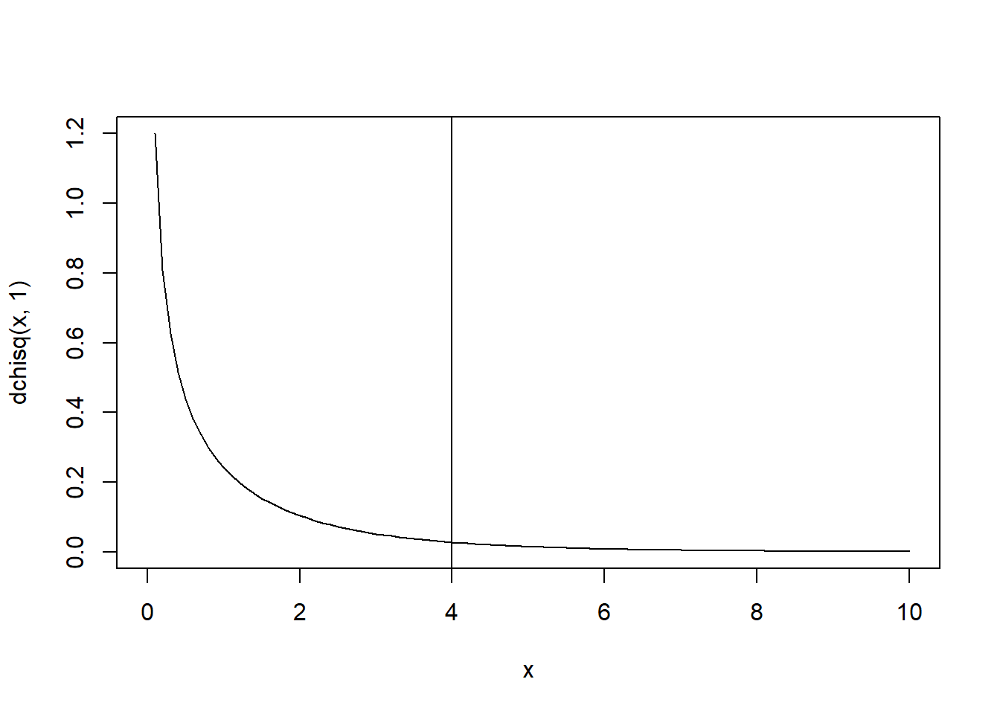
1-pchisq(4, 1)## [1] 0.04550026Still significant!
We can also compare our lm, OLS models using LRT, with
the anova function:
anova(ols_nullmodel, ols_model1)## Analysis of Variance Table
##
## Model 1: log_brain ~ 1
## Model 2: log_brain ~ log_body
## Res.Df RSS Df Sum of Sq F Pr(>F)
## 1 61 365.11
## 2 60 28.92 1 336.19 697.42 < 2.2e-16 ***
## ---
## Signif. codes: 0 '***' 0.001 '**' 0.01 '*' 0.05 '.' 0.1 ' ' 14.4.2 AIC
An alternative to LRT, especially if your models are not nested, is to compare them using AIC (Akaike information criterion) values. AIC values penalize the likelihood of a model for its number of parameters, thereby making it more “fair” to compare models with differing number of parameters (as likelihoods tend to be higher for models with more parameters). AIC chooses models based on their fit (likelihood) and their parsimony (penalizing for a large number of parameters).
The formula for AIC is:
\[ AIC = - 2 \log(\cal L) + 2 k\]
(this is why it’s useful to know the number of your model parameters, \(k\)!)
We can calculate the AIC values for our models using the formula and our log-likelihood values:
AIC0 <- -2*LL0 + 2*2
AIC1 <- -2*LL1 + 2*3
data.frame(AIC0, AIC1)## AIC0 AIC1
## 1 289.8785 134.6729Unlike our likelihood values, we want smaller AIC values. Here our model 1 has a (much) smaller AIC value. As a note, when comparing models with AIC, a difference > 4 indicates preference for the second model - we have a differing value >>>>>>> 4!
delta_AIC <- abs(AIC0 - AIC1)
delta_AIC## [1] 155.2055We can also get AIC values from our lm models, using the
AIC function:
AIC(ols_nullmodel, ols_model1)## df AIC
## ols_nullmodel 2 289.8785
## ols_model1 3 134.67295 Conclusions
For Gaussian models, OLS and MLE give (theoretically) the exact same result. The OLS approach is more exact, while the MLE relies on an optimization algorithm (though, sometimes MLE can be faster, because of the OLS dependence on completely inverting matrices).
However, OLS basically falls apart for any non-Gaussian model. So Maximum Likelihood is more generally useful.
As for our mammals example, our simple linear model was preferred based on AIC and LRT AND our \(\beta_0\) value was (drumroll please…)
fit_model1$par[2]## beta1
## 0.7516786… 0.75! Good job team, looks like we were able to uphold the results of Burger et al. Up next - Generalized linear models (GLM’s) and logistic regression!
“Regression” is an entire field of statistics, with countless courses and books devoted to it, etc. But - the word itself is highly problematic. It refers to a “regression to the mean” - a major obsession for Francis Dalton and a large generation and half of 19th century eugenecists/biometricians who developed some of these tools - when comparing a generation of fathers against a generation of sons. It is problematic in part because of that history, but also because - as a statistical approach - it is very, very rarely applied for a process where you are modeling the same thing against itself (except in cases of exploruing auto-regression, the one case where it is an appropriate term). We will try use the work linear modeling as much as possible, but will not always succeed.↩︎
Residuals are often called “errors”, and sometimes they do reflect “errors” in the sense of measurement error. But in ecology - far more often than not - the residuals are due to other biological sources of variation which we are not accounting for more so than measurement error. The process is broken down in to the modeled bit (i.e. the linear predictor, or \(\widehat Y\)) and the left-over bit (i.e. the residual, \(\epsilon\)).↩︎